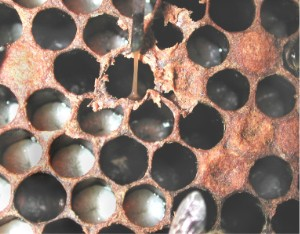
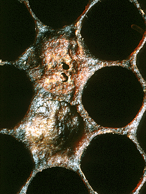
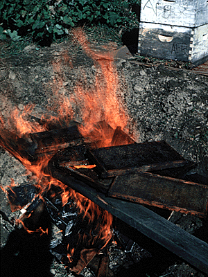
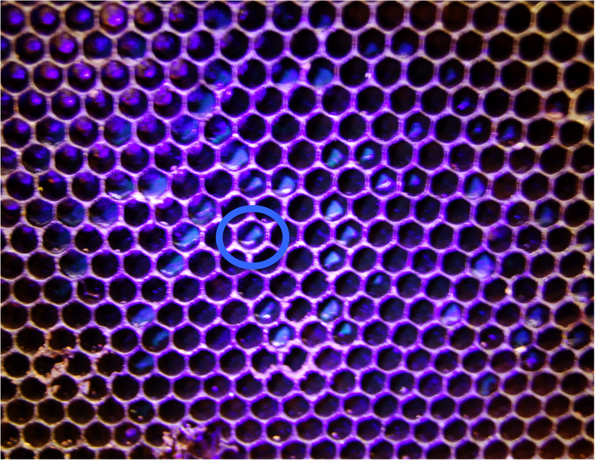

| MICHIGAN Michael G. Hansen State Apiarist MI Dept. of Agriculture Pesticide & Platn Pest Mgmt. Div. 4032 M-130 Building 116 St. Joseph, MI 49085 |
Phone |
(269) 428-2575 |
| Fax |
(269) 429-1007 |
|
| Email |
hansenmg@michigan.gov |
|
